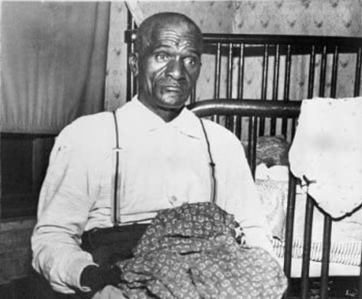
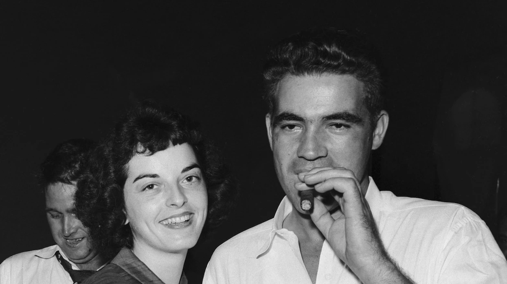
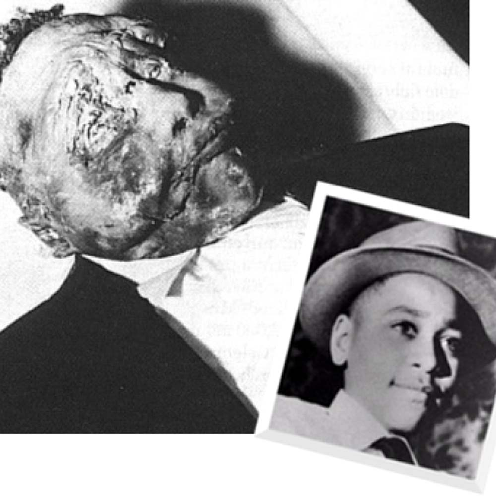
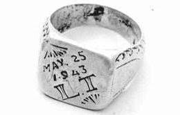

July 25, 1941
Birth of Emmett
Emmett Till was born in Chicago, Illinois.
Emmett Till was born in Chicago, Illinois.
Emmett Tills mother, Mamie Till, gave him his father's ring before he had left Chicago to visit his family in Mississippi. The ring had L.T. engraved on it.
Emmett arrived in Money, Mississippi to visit his great uncle Moses Wright, great aunt Elizabeth Wright, and his cousin Wheeler.
Emmett, Wheeler, and a group of teenagers had spent the afternoon working. So they decided to stop by a market store called Bryant's Grocery and Meat Market. The store was owned by a white couple, Roy and Carolyn Bryant, in which Carolyn was working the counter that day.
Emmett had gone into the store alone to buy some gum while everyone was waiting outside. No one is truly sure what took place between Carolyn and Emmett. Some say he whistled at her, touched her hand, or either was flirting with her in some kind of way.
Around 2:30 am, Roy Brant and his half-brother J.W. Milam came by Moses Wrights home with a gun and flashlight; they demanded to know where Emmett was and then dragged him out of his bed. There was someone with the two men who participated in this kidnapping who had stayed in the car but their identity is not known. This third person is suspected to be Carolyn because they identify and confirm to Roy and J.W. that they had Emmett before driving off with him. Later that day Moses reported Tills kidnapping to authorities.
The two men had beaten Till so badly that it was difficult to recognize him. They gouged out his eyes, knocked out his teeth, cut off his tongue, and shot him in the head. After torturing him, they took him to the bank of the Tallahatchie River where they tied one end of barbed wire to Emmetts neck and the other to a 70-pound cotton gin fan. Lastly, they dumped his body into the river.
Two boys who had gone fishing found Emmetts body and reported it. Authorities then went and retrieved Emmetts body but because he was beaten so badly, it was difficult to tell who he was. Moses was called to identify the body but it was difficult for him also. He then confirmed that the body was Emmetts when he saw that the ring he was wearing was Emmetts father's because of the initials engraved on it.
After the sheriff had seen Emmetts body, he insisted that the body be buried immediately and plans were made. Emmetts body was going to be prepared at Tutwiler Funeral Home and buried in Money, Mississippi at the Church of God in Christ Cemetery. These plans were ended when Mamie Till, Emmetts mother was contacted because she wanted him to be buried in Chicago.